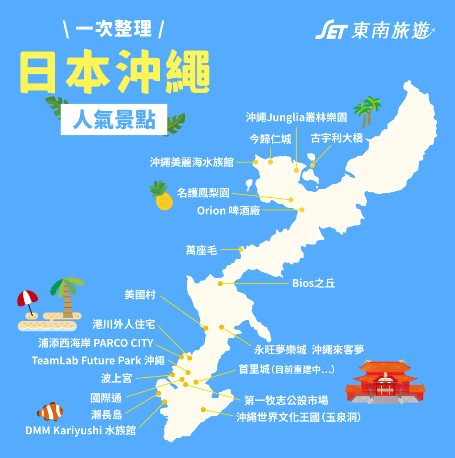

🏖️ 沖繩私藏景點 & 美食大調查
結合網紅打卡美食與絕美秘境，挑選出你心目中最完美的行程！

👆 點擊地圖可前往「東南旅遊」查看全島圖文攻略
🚗
開車概念比一比：
沖繩島從最北端開到最南端大約 107 公里。這距離就跟從
「台北車站」沿著國道開到「新竹城隍廟」
差不多！沿途海景無限，非常適合悠閒自駕慢慢玩。
📍 北部地區：純淨海域與自然奇景
📍 中部地區：美式風情與水上樂園
📍 南部地區：歷史文化與逛街購物
📝 請在每一區勾選 2~3 個最想去的景點
🚀 確認送出票選
📊 全體即時票選戰況
景點名稱
這裡放景點介紹...
🍔 當地美食 / 打卡推薦
這裡放美食資訊...
🔗 點我看達人圖文介紹
完美！我知道了